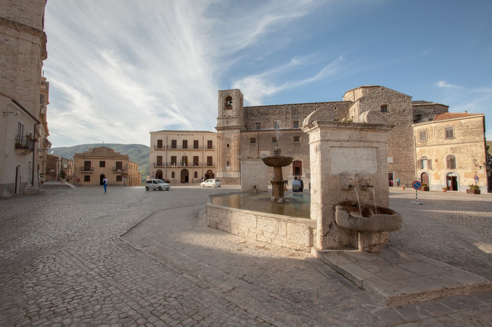
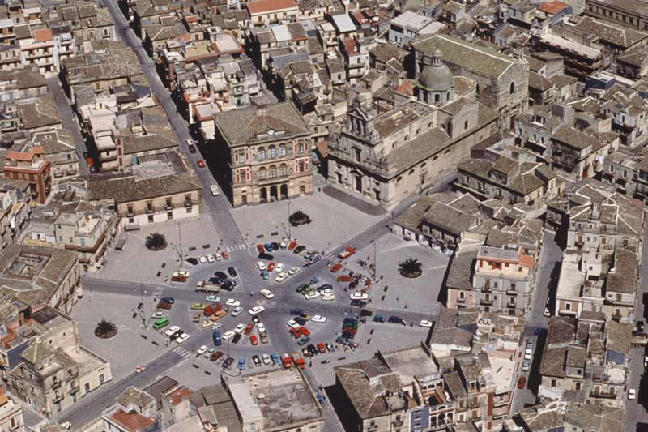
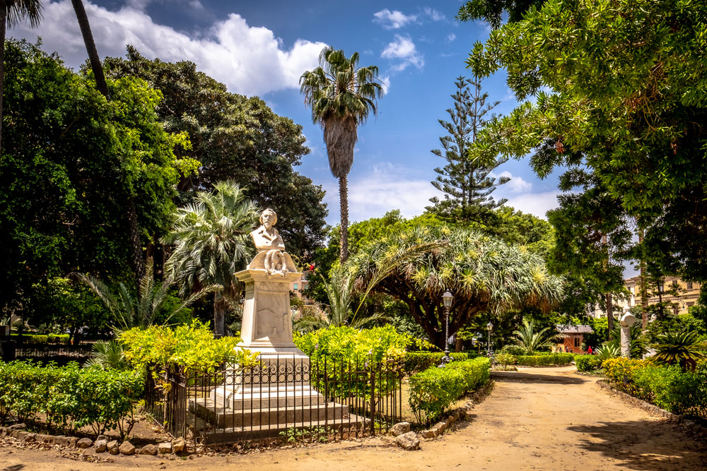
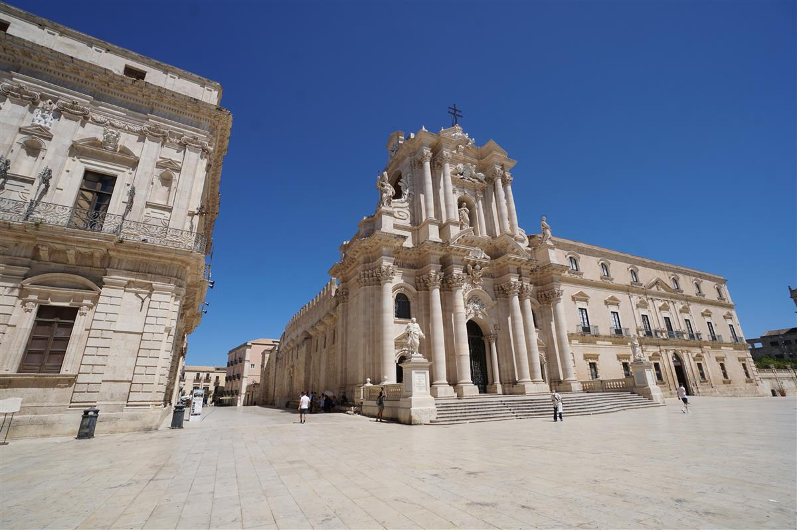
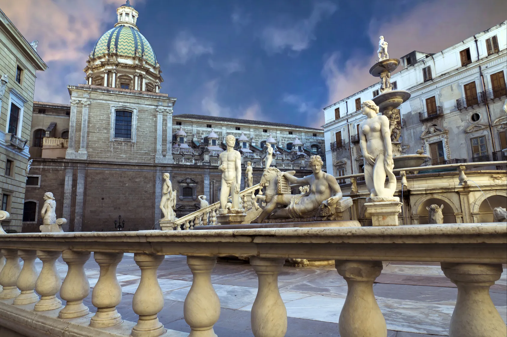

Piazze in primo piano

Piazza Umberto I - Palermo
Un angolo senza tempo nei Monti Sicani famoso per la sua fontana barocca e la storica comunità arbëreshe.

Piazza Carlo Maria Carafa - Catania
Un capolavoro urbanistico unico in Europa dove 6 strade convergono simmetricamente in una prospettiva a ragnatela.

Piazza Marina - Palermo
Un vero e proprio abbraccio verde circondato da palazzi nobiliari.

Piazza del Duomo - Siracusa
La maestosa Cattedrale che fonde mirabilmente le antiche colonne di un tempio greco con lo splendore del barocco.
Esperienze da vivere nelle piazze siciliane
Street photography, passeggiate serali, festival e dettagli barocchi: le piazze sono il punto dove la Sicilia si racconta.


Tutte le Piazze
Piazza Umberto I - Palermo
Il borgo dei Monti Sicani e la fontana barocca.
Piazza Carlo Maria Carafa - Catania
La pianta esagonale a ragnatela di Grammichele.
Piazza del Duomo - Siracusa
La maestosa Cattedrale barocca.
Piazza Marina - Palermo
Un abbraccio verde circondato da palazzi nobiliari.
Tutte le Piazze
Piazza Umberto I - Palermo
Il borgo dei Monti Sicani e la fontana barocca.
Piazza Carlo Maria Carafa - Catania
La pianta esagonale a ragnatela di Grammichele.
Piazza del Duomo - Siracusa
Ortigia e lo splendore del barocco sul mare.
Piazza Marina - Palermo
Il monumentale Ficus e Palazzo Chiaramonte-Sterī.
Street photography
Prova a catturare luce calda, ombre e dettagli in pietra. In Sicilia l'ora d'oro è pura magia.
Visite guidate e barocco
Molte piazze raccontano epoche diverse: esplora facciate, simboli e prospettive con una guida.
Mercati e vita quotidiana
Se sei vicino a un mercato, entra: colori, voci e profumi rendono la piazza un’esperienza completa.